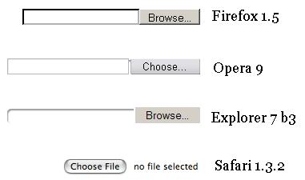
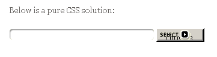
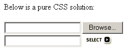

Credits wholly go to Michael McGrady, who invented this technique.
A browser must support opacity to support this technique. Therefore it doesn't work in Explorer 5.0 on Windows, Explorer 5 on Mac and Opera.
A reader suggested adding a keyup event to the real input box so that you can copy the text the user types to the fake one.
Of all form fields, the file upload field is by far the worst when it comes to styling. Explorer Windows offers some (but not many) style possibilities, Mozilla slightly less, and the other browsers none at all. The "Browse" button, especially, is completely inaccessible to CSS manipulation.
For a site I created I needed input fields like this one:
The designer wanted the same styles, plus a "Select" image, to apply to all file upload fields. When I applied the rules of normal input fields to file upload fields, though, it didn't really work. There were wild differences between the browsers, and styling the default button is totally impossible.
Ponder the differences.
This is hardly what anyone would call a nicely designed form field. Until recently, though, it was the best we could do.
Also note Safari's fundamentally different approach. The Safari team has probably decided on this approach to disallow the manual entering of a file name and this avoid exploits like this one. The drawback is that the user can't decide not to upload a file after having selected one.
Fortunately, reader Michael McGrady invented
a very neat trick that allows us to (more or less) style file upload fields. The credits for the solution
presented on this page are wholly his, I only added the position: relative, a few notes and
tests, and ported it entirely to JavaScript.
Without the technique your browser reacts like this:
Now that looks much better, doesn't it? (Provided your browser supports opacity)
McGrady's technique is elegant in its simplicity:
<input type="file"> and put it in an element with position: relative.<input> and an image, which have the correct styles.
Position these elements absolutely, so that they occupy the same place as the <input type="file">.z-index of the <input type="file"> to 2 so that
it lies on top of the styled input/image.opacity of the <input type="file"> to 0. The <input type="file">
now becomes effectively invisible, and the styles input/image shines through,
but you can still click on the "Browse" button. If the button is positioned on top of the image,
the user appears to click on the image and gets the normal file selection window.visibility: hidden, because a truly invisible
element is unclickable, too, and we need the <input type="file"> to remain clickable)Until here the effect can be achieved through pure CSS. However, one feature is still lacking.
<input type="file"> would. It's simply a matter of copying the new value of the <input type="file"> to
the fake input field, but we need JavaScript to do this.Therefore this technique will not wholly work without JavaScript. For reasons I'll explain later, I decided to port the entire idea to JavaScript. If you're willing to do without the visible file name you can use the pure CSS solution. I'm not sure if this would be a good idea, though.
I've decided on the following HTML/CSS approach:
div.fileinputs {
position: relative;
}
div.fakefile {
position: absolute;
top: 0px;
left: 0px;
z-index: 1;
}
input.file {
position: relative;
text-align: right;
-moz-opacity:0 ;
filter:alpha(opacity: 0);
opacity: 0;
z-index: 2;
}
<div class="fileinputs">
<input type="file" class="file" />
<div class="fakefile">
<input />
<img src="search.gif" />
</div>
</div>
The surrounding <div class="fileinputs"> is positioned relatively so that we can
create an absolutely positioned layer inside it: the fake file input.
The <div class="fakefile">, containing the fake input and the button, is positioned
absolutely and has a z-index of 1, so that it appears underneath the real file input.
The real file input field also gets position: relative to be able to assign it a
z-index. After all, the real field should be on top of the fake field. Then we set the
opacity of the real file input field to 0, making it effectively invisible.
Also note the
text-align: right: since Mozilla refuses a width declaration for the real file
field, we should make sure that the "Browse" button is at the right edge of the <div>.
The fake "Search" button is also positioned at the right edge, and it should be underneath the real
button.
You'll need some subtle CSS to set all widths, heights, borders and so on, but I didn't include it in this code example. View the source of this page to study my approach in this particular case; your pages will be different, though, so you'll have to change these values.
Nonetheless, I decided to go for a strict JavaScript solution. My first reason is that we need JavaScript anyway to copy the file path to the fake field.
Secondly, a JavaScript solution would avoid meaningless extra HTML:
the <div class="fakefile">. It'd keep my code cleaner.
Finally, older browsers can't really handle the CSS, down to the point that the file input becomes inaccessible in Netscape and Explorer 4. As to users of no-CSS browsers, they'd see two input fields, and wouldn't understand what the second one was for.
Below is a pure CSS solution:
Some browser screenshots will further explain the accessibility issues.
First Netscape 4. As you see, the user sees only the button. This may be because the form is spread
across two layers by my use of position: absolute, and Netscape 4 can't handle that.
Worse: the user can't click on the button. Maybe an extensive week long study would reveal a partial solution to this problem, but frankly I can't be bothered. Nonetheless, the field must be accessible to Netscape 4 users.
Explorer 4: an odd shadow of the original "Browse" button, and it's not clickable, either. The solution is inaccessible in Explorer 4.
Finally, users of Netscape 3, or any other non-CSS browser. The field is still accessible, but users will quite likely be confused by the extra input field.
The solution to all this nastiness is simple: generate the fake input and button through JavaScript.
Now, the worst that can happen is that the script doesn't work, in which case the user only sees the
real <input type="file">. Less beautiful, certainly, but still accessible.
So the hard coded HTML is reduced to:
<div class="fileinputs"> <input type="file" class="file"> </div>
We'll add the rest of the elements through JavaScript.
So I wrote the following script:
var W3CDOM = (document.createElement && document.getElementsByTagName);
function initFileUploads() {
if (!W3CDOM) return;
var fakeFileUpload = document.createElement('div');
fakeFileUpload.className = 'fakefile';
fakeFileUpload.appendChild(document.createElement('input'));
var image = document.createElement('img');
image.src='pix/button_select.gif';
fakeFileUpload.appendChild(image);
var x = document.getElementsByTagName('input');
for (var i=0;i<x.length;i++) {
if (x[i].type != 'file') continue;
if (x[i].parentNode.className != 'fileinputs') continue;
x[i].className = 'file hidden';
var clone = fakeFileUpload.cloneNode(true);
x[i].parentNode.appendChild(clone);
x[i].relatedElement = clone.getElementsByTagName('input')[0];
x[i].onchange = x[i].onmouseout = function () {
this.relatedElement.value = this.value;
}
}
}
If the browser doesn't support the W3C DOM, don't do anything.
var W3CDOM = (document.createElement && document.getElementsByTagName);
function initFileUploads() {
if (!W3CDOM) return;
Create the <div class="fakefile"> and its content. We'll clone it as often as necessary.
var fakeFileUpload = document.createElement('div');
fakeFileUpload.className = 'fakefile';
fakeFileUpload.appendChild(document.createElement('input'));
var image = document.createElement('img');
image.src='pix/button_select.gif';
fakeFileUpload.appendChild(image);
Then go through all inputs on the page and ignore the ones that aren't <input type="file">.
var x = document.getElementsByTagName('input');
for (var i=0;i<x.length;i++) {
if (x[i].type != 'file') continue;
Yet another check: if the <input type="file"> does not have a parent element with class
fileinputs, ignore it.
if (x[i].parentNode.className != 'fileinputs') continue;
Now we've found an <input type="file"> that needs tweaking. First we add "hidden" to its
class name. I add the advanced styles (opacity and positioning) with this new class, since they might
conceivably cause problems in old browsers.
x[i].className = 'file hidden';
Clone the fake field and append it to the <input type="file">'s parent node.
var clone = fakeFileUpload.cloneNode(true); x[i].parentNode.appendChild(clone);
Now we've succesfully styled the <input type="file">. We're not yet ready, though, we have
to make sure the user sees the path to the file he wants to upload.
First we create a new property for the <input type="file"> that points to the fake input
field:
x[i].relatedElement = clone.getElementsByTagName('input')[0];
We use this to easily access the fake field as soon as the user changes the real <input type="file">
(ie. selects a file), so that we can copy its value to the fake input field.
A problem here, though: which event do we use? Most natural would seem the change event
of the file field: if its value changes, the fake input field's value should also change.
Unfortunately Mozilla 1.6 doesn't support the change event on file fields (Firefox
0.9.3 does, by the way). For Mozilla's sake I also use the mouseout event, which conveniently
fires only after the user has selected a file. (This also works in Explorer, but not in Safari)
x[i].onchange = x[i].onmouseout = function () {
this.relatedElement.value = this.value;
}
One problem remains: the user can't choose not to upload a file after all.
Suppose the user selects a file, then on second thought decides not to upload it. In a normal
<input type="file"> he can simply remove the path, and the file won't be uploaded. In our
example, though, this is very difficult. Try it, it can be done, but it's
totally counter-intuitive.
So what we'd like to do is allow the user to select and modify the content of the fake file upload and copy all changes to the real file upload.
Allowing selection is somewhat possible. When the user selects any part of the real file upload, we select the entire value of the fake file upload.
x[i].onselect = function () {
this.relatedElement.select();
}
Unfortunately, JavaScript security does not allow us to change the value of an <input type="file">,
so we can't let the user manually change the fake input. Therefore I decided to entirely leave out
the onselect event handler.
A possible solution would be to add a "Clear" button to the fake input, which triggers a script that
entirely trashes the <input type="file"> and creates a new one. It's a bit cumbersome, but
we might be able to remove the chosen file entirely. I didn't write that part of the script,
though, so I'm not sure if it would actually work.
A reader proposed to remove all the complicated CSS stuff, totally hide the file upload field, and route all click events on the fake upload field to the real one. An excellent idea, and much simpler than the one described above.
fakeField.onclick = function () {
realField.click()
}
The click() method allows you to simulate a click on a form field. Checkboxes get toggled,
radios selected, and so on. Unfortunately Mozilla and Opera haven't added this method to file upload
fields. I wonder why, adding it is not really a security risk since the worst that can happen is that
the file selection window pops up.
So unfortunately we cannot use this simple solution.